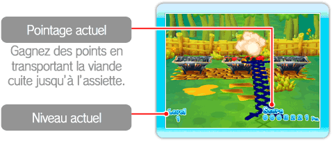
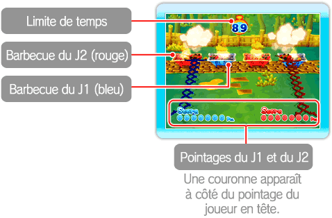
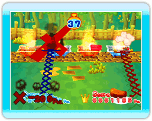

● 1P Mode (mode 1 joueur)
Grill-off with Ultra Hand! est un jeu frénétique qui vous fera saliver! Des morceaux de viande tombent du ciel et atterrissent sur des barbecues, où ils cuisent très rapidement. Lorsque la viande est prête, utilisez l’Ultra Hand pour prendre les morceaux et les déposer dans l’assiette devant vous. Si vous laissez un morceau de viande brûler ou si vous en échappez un, vous perdez la partie. Il n’y a aucune limite de temps dans ce mode 1 joueur.
Notes : - Consultez la page 9 pour plus de détails sur la façon de prendre et de transporter les morceaux de viande.
- Appuyez sur  pour accéder au menu pause. Dans ce menu, vous pouvez choisir de recommencer un niveau du début ou de retourner au menu principal.
pour accéder au menu pause. Dans ce menu, vous pouvez choisir de recommencer un niveau du début ou de retourner au menu principal.

・ Niveaux
Votre niveau augmentera lorsque vous aurez grillé assez de morceaux de viande. Chaque fois que vous passez à un autre niveau, les morceaux de viande tombent sur le barbecue plus rapidement et cuisent plus rapidement. Vous remarquerez peut-être de nouveaux types de viande!
● VS Mode (mode un contre l’autre)
Affrontez un ou une ami(e) pour voir qui obtiendra le pointage le plus haut en 90 secondes. Dans ce mode, le joueur 1 s’occupe des barbecues bleus, et le joueur 2, des barbecues rouges (des manettes additionnelles vendues séparément sont requises). Transportez les morceaux de viande cuits de vos barbecues à vos assiettes. Vous pouvez aussi vous emparer des morceaux de votre adversaire pour lui voler des points!

・ Perdre des points
Vous perdez des points si vous laissez des morceaux de viande brûler ou si vous échappez de la viande sur le sol. Ne lâchez pas prise!